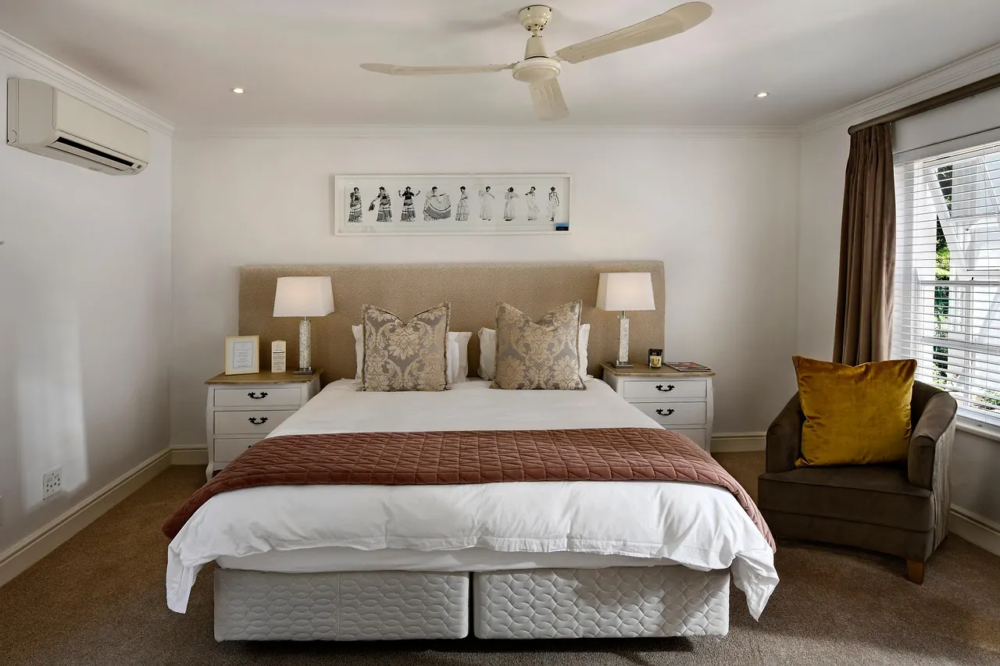
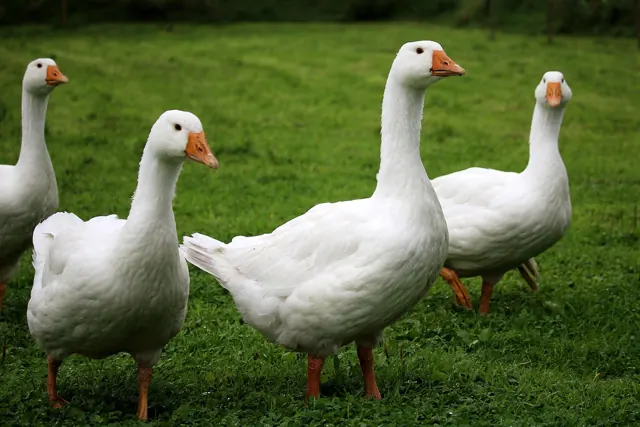

Yorgan seçimi rehberi: ölçü, ağırlık, dolgu ve mevsim
Yatağınıza hangi ölçü yorgan alınır? Kaç kilo olmalı? Yazlık, kışlık, dört mevsim farkı ne? Adım adım doğru yorgan.

Doğru yorgan dört soruyla bulunur: hangi yatak, kim için, ne kadar sıcak, nasıl bakım? Bu rehberde dükkânda müşterilerimize sorduğumuz soruları sırayla anlatıyoruz.
1. Ölçü: yorgan yataktan geniş olmalı
Yorgan, yatağın iki yanından sarkacak kadar geniş olmalı ki gece dönünce açıkta kalmayın. Türkiye'de yaygın ölçüler:
| Yatak | Önerilen yorgan |
|---|---|
| Tek kişilik (90×190 / 100×200) | 155×215 cm |
| Çift kişilik (140×190 / 160×200) | 195×215 cm |
| Geniş çift (180×200) | 220×240 cm |
| Çocuk yatağı (70×140) | 95×145 cm |
İki kişi aynı yatakta yatıyor ve biri yorganı çekiyorsa bir üst ölçü ya da iki ayrı tek kişilik yorgan iyi bir çözümdür. Dükkânda istediğiniz ölçüde dikebiliriz (el dikimi yorganlar).
2. Dolgu: hangisi neye iyi?
- Yün: En sıcak doğal dolgulardan; nemi yönetir, ağırdır, yenilenir. Üşüyenler ve serin evler için.
- Pamuk: Nefes alır, serin tutar, oturaklıdır. Terleyenler için.
- Silikon / elyaf: Hafif, yıkanabilir, ekonomik. Sık yıkama isteyenler için.
- Kaz tüyü: Çok hafif ama sıcak. Hafif yorgan sevip üşüyenler için.
- Bambu karışımları: Serin dokunuşlu; yaz için.
Hepsini yan yana görmek için ürünler sayfamızdaki karşılaştırma tablosuna bakın.
3. Ağırlık ve sıcaklık
Avrupa'da yorgan sıcaklığı "tog" adı verilen ısı direnci birimiyle etiketlenir; Türkiye'de ise genelde dolgu ağırlığı (gram/kg) yazılır. Aynı ağırlıktaki farklı dolgular farklı ısıtır: 1 kg kaz tüyü, 1 kg elyaftan çok daha sıcaktır. Kabaca:
- Yün/pamuk çift kişilik: Yazlık ~2 kg, dört mevsim ~3 kg, kışlık ~4–5 kg.
- Silikon çift kişilik: Yazlık 200–300 g/m², kışlık 400 g/m² ve üzeri (etikete bakın).
Ramazan usta'nın yün ve pamukta tavsiyesi 3 ile 5 kg arasıdır; odanız sıcaksa alt sınırdan başlayın.
4. Mevsim: tek yorgan mı, iki yorgan mı?
Yatak odası sıcaklığının 16–19 °C civarında olması çoğu kişi için rahat uyku sağlar (uyku sağlığı kuruluşlarının genel önerisi). Kışın sobalı ya da serin bir evde kalın yorgan, yazın ince yorgan ya da pike gerekir.
- İki yorgan (yazlık + kışlık): En esnek çözüm; yazlık yorgan baharda tek, kışın kışlığın altında kullanılabilir.
- Dört mevsim yorgan: Orta ağırlıkta tek yorgan; ılıman iklimde yeterli.
Korkuteli gibi kışı sert, yazı sıcak yerlerde çoğu aile iki yorganla rahat eder.
5. Yüz kumaşı
Yorganın yüzü, dolgu kadar önemlidir. Pamuklu yüz nefes alır; saten parlak ve kaygandır, çeyiz yorganlarında tercih edilir. Tüy yorganlarda tüy dışarı çıkmasın diye sık dokunmuş kumaş gerekir.
6. Bakım alışkanlığınız
Yorganı makinede yıkamak istiyorsanız sentetik dolgu seçin. Yün ve pamuk yıkanmaz ama kılıfla kullanılıp yıllarca yenilenir. Bakım rehberimizde hangi dolgunun nasıl temizlendiğini anlattık.
Kısa özet
- Yatağınızın ölçüsünü ölçün, yorganı bir boy büyük düşünün.
- Üşüyor musunuz, terliyor musunuz? Dolguyu buna göre seçin.
- Odanızın sıcaklığına göre ağırlığı belirleyin.
- Yıkama alışkanlığınızı hesaba katın.
Emin olamazsanız WhatsApp'tan yatağınızın ölçüsünü ve evinizin ne kadar sıcak olduğunu yazın; Ramazan usta önerisini söylesin.
Sorunuz mu var?
Yatağınızın ölçüsünü, odanızın ne kadar sıcak olduğunu ya da yorganınızın fotoğrafını gönderin; Ramazan usta önerisini söylesin.
Sık sorulan sorular
Çift kişilik yorgan ölçüsü kaçtır?
Türkiye'de standart çift kişilik yorgan 195×215 cm'dir. 180×200 yatak için 220×240 cm önerilir.
Kışlık yorgan kaç kilo olmalı?
Yün ya da pamuk çift kişilik kışlık yorgan genelde 4–5 kg olur. Odanız sıcaksa 3–4 kg yeterlidir.
Dört mevsim yorgan yeterli mi?
Ilıman iklimde ve ısıtılan evlerde çoğu zaman yeterli. Kışı sert bölgelerde yazlık + kışlık iki yorgan daha esnektir.
Özel ölçü yorgan yaptırabilir miyim?
Evet. İstediğiniz en ve boyda, istediğiniz dolgu ve kumaşla dükkânda dikilir.
Yazıda geçen ürünler

Ustanın elinden, yıkanmış ve atılmış yünle; saten ya da pamuklu yüzle dikilir.

Nefes alan, ter tutmayan pamuk dolgu; dükkânda serilip elde dikilir.

Silikonla kaplanmış boşluklu polyester elyaf: hafif, yıkanabilir, uygun fiyatlı.

Çok hafif ama sıcak; gıdık (kuş tüyü) oranı yükseldikçe kabarıklık artar.
Kaynaklar
- British Standards Institution, BS 5335 (yorgan ısı direnci / tog ölçümü).
- Sleep Foundation (2024). Best temperature for sleep.
Bu yazı genel bilgilendirme amaçlıdır; tıbbi tavsiye değildir. Sağlıkla ilgili şikâyetleriniz için hekiminize danışın.